본 포스트는 서울대학교 컴퓨터공학부 시스템 프로그래밍(M1522.000800, System Programming, Fall 2026) 강의 자료 중 3강 — Input/Output: Unix Filesystem Concepts (총 41장)를 바탕으로, 강의를 처음 듣는 독자도 논리적 흐름을 따라갈 수 있도록 재구성한 것입니다. 원본 슬라이드는 영문으로 작성되어 있으며, 본문의 대섹션 구분은 강의 첫머리의 Lecture Outline 슬라이드(The Unix File Concept → The Unix Filesystem → Filesystems and Security → Summary)를 그대로 따랐습니다.
한 줄 요약 (TL;DR)
“Unix는 모든 것을 ’바이트 열’이라는 하나의 타입으로 환원하고, 그 대가로 모든 보안 정책을 파일 권한 비트 위에 얹습니다.”
이번 강의는 세 걸음으로 진행됩니다. 먼저 파일(file)을 \(m\)개의 바이트가 늘어선 열로 정의하고, 디스크·키보드·네트워크 소켓·커널 자료구조까지 전부 이 정의 안으로 끌어들여 하나의 인터페이스(Unix I/O)로 다룰 수 있게 만듭니다. 다음으로 그 파일들을 담는 파일시스템을 봅니다 — 드라이브 문자 없이 단일 루트
/아래에 다른 장치를 마운트(mount)해 붙이고, i-node와 하드/소프트 링크로 이름과 실체를 분리하며, FHS로 “무엇이 어디에 있는가”를 표준화합니다. 마지막으로 그 대가를 정산합니다. 모든 것이 파일이라면 모든 접근 제어도 파일 권한 비트 하나로 표현되어야 하고, 그래서rwx아홉 비트 위에 sticky bit · SUID/SGID bit라는 특수 비트가 얹히며, 여기서 world-writable + execute, root 소유 SUID 바이너리 같은 전형적인 위험 설정이 태어납니다. POSIX ACL의 표현력 한계는 확장 파일 속성(xattr)과setfacl/setfattr이 메웁니다.
1. Unix 파일 개념 (The Unix File Concept)
강의는 “파일이란 무엇인가”라는 가장 밑바닥의 질문에서 출발합니다. 이 정의가 얼마나 얄팍한지가 이후 모든 논의의 출발점이 됩니다.
1.1 Unix 파일 (Unix Files)
Unix 파일은 \(m\)개의 바이트가 늘어선 열(a sequence of \(m\) bytes)입니다.
\[ B_0,\; B_1,\; B_2,\; \dots,\; B_k,\; \dots,\; B_{m-1} \]
여기서 \(B_k\)는 파일의 \(k\)번째 바이트이고, 인덱스는 \(0\)부터 시작해 \(m-1\)에서 끝납니다. 정의에 들어 있는 것은 길이 \(m\)과 각 위치의 바이트 값뿐이며, 그 외의 구조는 아무것도 없습니다.
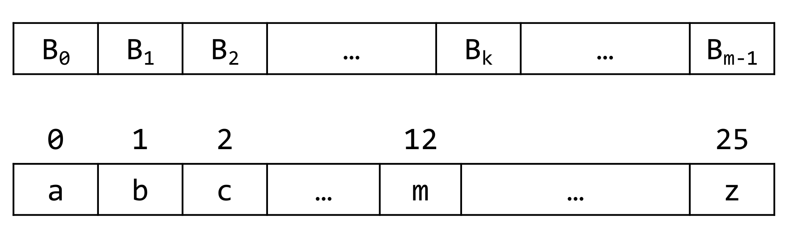
a, b, c, m, z는 그 위치의 바이트 값입니다. 인덱스 12에 m이, 마지막 인덱스 25에 z가 놓인다는 점에서 인덱스가 1이 아니라 0부터 시작한다는 사실과 \(m = 26\)일 때 마지막 바이트가 \(B_{25}\)라는 사실이 동시에 확인됩니다.정의가 이렇게 빈약하다는 것이 오히려 Unix 설계의 핵심입니다. 파일에 “형식”이 없으니, 형식을 갖지 않는 모든 것을 파일이라고 부를 수 있게 됩니다.
- *nix 시스템에서는 모든 것이 파일로 모델링됩니다(everything is modeled as a file).
- 일반 파일(regular files), 디렉토리(directories)
- 네트워크 소켓(network sockets)
- 가상 파일시스템(virtual file systems,
/proc) - 장치: 디스크, 디스크 파티션
- 장치: 메모리, 키보드, 마우스, 디스플레이 등
키보드는 “눌린 키가 순서대로 흘러나오는 바이트 열”이고, 디스크는 “섹터가 순서대로 늘어선 바이트 열”이며, 프로세스 목록조차 “읽으면 텍스트가 나오는 바이트 열”입니다. 서로 아무 공통점이 없어 보이는 것들이 같은 타입을 갖게 되는 순간입니다.
1.2 Unix 파일의 예 (Unix Files: Examples)
강의는 이 주장을 구체적인 경로로 확인시켜 줍니다.
- I/O 장치가 파일로 표현됩니다.
| 경로 | 의미 |
|---|---|
/dev/sda |
SATA 버스의 첫 번째 디스크(first disk on SATA bus) |
/dev/input/mice |
연결된 모든 마우스의 집합(aggregate of all connected mice) |
/dev/tty |
터미널(terminal) |
- 커널 자체도 여러 개의 파일로 노출됩니다.
| 경로 | 의미 |
|---|---|
/dev/kmem |
커널 메모리 이미지(kernel memory image) — Ubuntu에서는 기본적으로 비활성화되어 있습니다 |
/proc |
커널 자료구조(kernel data structures) |
- 시스템 설정도 파일로 매핑됩니다.
/sys
/dev/kmem이 기본적으로 꺼져 있다는 단서는 이 설계의 양면성을 미리 보여 줍니다. 커널 메모리를 “파일 하나 읽는 일”로 만들어 버리면 편리하지만, 동시에 그 파일 하나만 읽히면 커널 전체가 노출됩니다. 3장에서 다룰 보안 논의는 이 지점에서 시작됩니다.
1.3 Unix 파일 타입 (Unix File Types)
모든 것이 파일이라면, 그 “모든 것”을 구별할 방법이 필요합니다. Unix는 몇 가지 파일 타입을 둡니다.
일반 파일(Regular file)
- 사용자·응용 프로그램의 데이터를 담은 파일입니다 (바이너리든 텍스트든 무엇이든).
- OS는 그 형식에 대해 아무것도 알지 못합니다 — “바이트 열”이라는 것 외에는. 확장자를 해석하는 주체는 커널이 아니라 응용 프로그램입니다.
디렉토리 파일(Directory file)
- 디렉토리 안에 있는 파일들의 이름(name)과 위치(i-number)를 담은 파일입니다. 즉 디렉토리도 예외가 아니라 그냥 파일입니다 — 다만 내용이 “이름 ↔︎ 번호” 쌍의 목록일 뿐입니다.
- i-number는 i-node의 위치를 가리키는 번호입니다.
- i-node(index node)는 파일의 메타데이터를 담고 있는 노드입니다 — 권한(permissions), 소유권(ownership), 타임스탬프(timestamps), 크기(size) 등.
여기서 중요한 것은 파일 이름이 i-node 안에 없다는 점입니다. 이름은 디렉토리가 갖고 있고, 실체(메타데이터와 데이터 블록)는 i-node가 갖습니다. 이 이름과 실체의 분리가 2.3절의 하드 링크를 가능하게 만드는 구조적 전제입니다.
장치 파일(Device file)
장치 파일은 다시 두 갈래로 나뉩니다.
| 문자 특수 파일(Character special) | 블록 특수 파일(Block special) | |
|---|---|---|
| 대상 | 문자 장치(character devices) — 데이터를 개별 문자·바이트의 스트림으로 다루는 하드웨어 또는 가상 장치 | 블록 장치(block devices) — 데이터를 고정 크기 블록 단위로 다루는 저장 장치 |
| 성질 | 순차 접근(sequential access), 버퍼링 없음(no buffering), 실시간 상호작용(real-time interaction), 가변 데이터 전송률(variable data rates) | 블록 단위 접근(block-based access), 임의 접근(random access), 버퍼링된 I/O(buffered I/O) |
| 예 | 터미널, 시리얼 포트, 키보드, 마우스, 사운드 카드 등 | 하드 디스크, USB 드라이브, CD/DVD 드라이브 등 |
| 확인 | ls -l /dev/tty0 → 첫 글자가 c |
ls -l /dev/sda → 첫 글자가 b |
FIFO (named pipe)
- 프로세스 간에 단방향(unidirectional) 통신 채널을 만드는 특수 파일입니다 — 프로세스 간 통신(IPC)의 한 수단입니다.
- 일반 파일과 달리 메모리에만 존재합니다. 파일시스템에는 이름만 남고 데이터가 디스크에 쌓이지 않습니다.
- 한 프로세스가 FIFO에 쓴 데이터를 다른 프로세스가 같은 순서로 읽습니다.
mkfifo abc; gzip -c < abc > abc.gz&; cat document.txt > abc; rm abc
ls -l abc # 첫 글자가 'p'gzip은 abc에서 읽으려고 기다리고, cat은 abc로 씁니다. 두 프로세스가 디스크에 중간 파일을 만들지 않고 메모리를 통해 직접 연결되는 셈입니다.
Socket (unix domain socket)
- 프로세스 간 로컬 통신에 사용되는 파일 타입입니다.
- FIFO와 비슷하지만 양방향(bidirectional) 통신을 지원하며, 네트워크를 건너서도 동작합니다.
ls -l /tmp/.X11-unix/X0 # 첫 글자가 's'1.4 Unix I/O
이제 이 모든 것을 하나로 묶는 주장이 나옵니다.
- 설계 개념(Design concept): 모든 입력과 출력이 일관되고 균일한 방식(consistent and uniform way)으로 처리됩니다.
- 파일을 장치에 우아하게 매핑한 덕분에, 커널은 Unix I/O라 불리는 단순한 인터페이스 하나만 외부에 노출하면 됩니다.
One single file interface to interact with any kind of device
어떤 종류의 장치와 상호작용하든, 인터페이스는 파일 인터페이스 하나입니다.
이것이 3강 전반부의 결론입니다. 디스크를 읽는 코드와 키보드를 읽는 코드와 소켓을 읽는 코드가 모두 같은 시스템 호출을 씁니다. 응용 프로그램 입장에서 장치의 종류는 “어떤 경로를 여는가”의 문제로 축소되고, 장치별 차이를 흡수하는 일은 전부 커널 쪽으로 밀려납니다.
2. Unix 파일시스템 (The Unix Filesystem)
파일 하나의 정의를 마쳤으니, 이제 그 파일들이 어디에 어떻게 놓이는가로 넘어갑니다.
2.1 하나의 루트 (One root to rule them all)
- 루트
/하나에서 시작하는 단일 파일시스템입니다. - Windows와 달리 “드라이브”라는 개념이 없습니다.
C:,D:처럼 장치마다 별도의 네임스페이스가 생기지 않습니다. - 추가 파일시스템은 파일시스템 트리 안의 디렉토리로 매핑됩니다.
- 마운트 포인트(mount point) = 파일시스템이 붙는 디렉토리입니다.
마운트 포인트는 다른 파일시스템이 부착되는 디렉토리입니다. 부착 이후 그 디렉토리 경로로 접근하면, 원래 거기에 있던 내용이 아니라 새로 붙인 파일시스템의 루트가 보입니다. 즉 경로는 그대로인데 그 아래의 실체가 통째로 바뀝니다.
강의는 이를 터미널 세션 하나로 보여 줍니다.
devel@csapvm $ ls -1
share
temp
work
devel@csapvm $ mkdir extern
devel@csapvm $ echo "hello" > extern/hello
devel@csapvm $ ls extern/
hello
devel@csapvm $ sudo mount -t tmpfs /dev/shm extern/
Password:
devel@csapvm $ ls extern/
devel@csapvm $ echo "extern" > extern/extern
devel@csapvm $ ls extern/
extern
devel@csapvm $ sudo umount extern
devel@csapvm $ ls extern/
hello
devel@csapvm흐름을 따라가 보겠습니다.
extern디렉토리를 만들고 그 안에hello파일을 넣습니다. →ls extern/은hello를 보여 줍니다.extern/에tmpfs를 마운트합니다. →ls extern/이 비어 있습니다.hello가 삭제된 것이 아니라 가려진(hidden) 것입니다.- 마운트된 상태에서
extern파일을 만듭니다. → 이 파일은tmpfs쪽에 쓰입니다. umount후 다시 보면 →hello가 그대로 돌아옵니다. 그리고 마운트 중에 만든extern은 보이지 않습니다.
매핑된 파일시스템은 마운트 포인트 아래의 디렉토리 트리 내용을 가립니다(hide). 이것이 이 실험의 결론입니다.
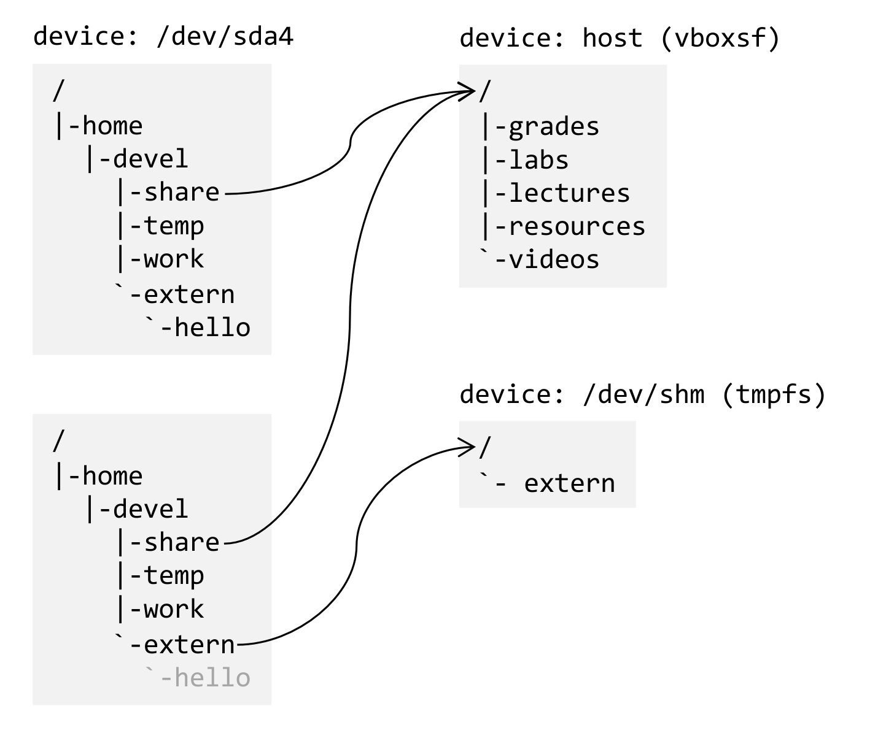
/dev/sda4에 담긴 루트 파일시스템의 같은 경로를 두 시점에 찍은 것이고, 오른쪽 열의 두 상자는 그 경로에 마운트된 다른 장치의 내용입니다. 위쪽 짝을 보면 /home/devel/share에서 뻗은 화살표가 오른쪽의 device: host (vboxsf) 상자로 이어져, 호스트가 공유한 grades·labs·lectures·resources·videos가 실제로는 그 경로 아래에 나타난다는 사실을 나타냅니다. 아래쪽 짝은 extern에 tmpfs를 마운트한 뒤의 상태로, `-extern에서 나온 화살표가 device: /dev/shm (tmpfs)를 가리키는 동시에 그 바로 아래의 `-hello가 회색으로 흐려져 있습니다. 이 회색이 이 그림의 핵심입니다 — hello는 삭제된 것이 아니라 여전히 /dev/sda4 위에 존재하지만 마운트에 가려 접근 경로를 잃은 상태이며, umount 즉시 다시 드러납니다.2.2 마운트 옵션 (Mount Properties)
- 이 개념은 극히 강력합니다(extremely powerful concept).
- 마운트된 각 파일시스템은 추가 속성을 가질 수 있습니다.
| 옵션 | 의미 |
|---|---|
ro |
쓰기를 허용하지 않음(do not allow writes) |
noatime |
접근 시각(access time)을 갱신하지 않음 |
noexec |
프로그램 실행을 허용하지 않음(do not allow execution of programs) |
nosuid |
set user/group id를 허용하지 않음 |
여기서 noexec와 nosuid를 눈여겨봐 두면 좋습니다. 3장에서 다룰 위험 설정들을 파일 단위가 아니라 파일시스템 단위로 통째로 차단하는 스위치가 바로 이 둘입니다.
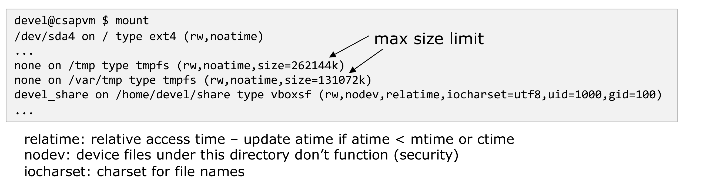
mount 출력에서 마운트 옵션이 실제로 어떻게 나타나는지를 보여 주는 화면입니다. 각 줄은 <장치> on <마운트 포인트> type <파일시스템 종류> (<옵션들>) 형식이며, 첫 줄의 /dev/sda4 on / type ext4 (rw,noatime)은 루트가 ext4로 쓰기 가능하게, 그러나 접근 시각 갱신 없이 붙어 있음을 뜻합니다. 오른쪽 위 “max size limit”이라는 문구에서 뻗은 두 개의 화살표는 /tmp와 /var/tmp에 붙은 size=262144k·size=131072k 항목을 각각 가리키는데, 이는 두 tmpfs가 메모리를 무제한으로 잡아먹지 못하도록 상한이 걸려 있다는 사실을 지목한 것입니다. 상자 아래의 세 줄은 그림 위쪽 출력에 등장하는 나머지 옵션들의 해설로, relatime은 상대적 접근 시각(atime이 mtime이나 ctime보다 이전일 때만 atime을 갱신), nodev는 해당 디렉토리 아래의 장치 파일이 동작하지 않게 하는 보안 옵션, iocharset은 파일 이름에 쓰이는 문자 집합을 뜻합니다.2.3 사용자 · 그룹과 소프트 · 하드 링크 (User, group, soft & hard links)
모든 파일은 하나의 사용자(user)와 하나의 그룹(group)이 소유합니다. ls -l은 그 소유 정보를 포함해 파일의 메타데이터를 한 줄에 펼쳐 보여 줍니다.
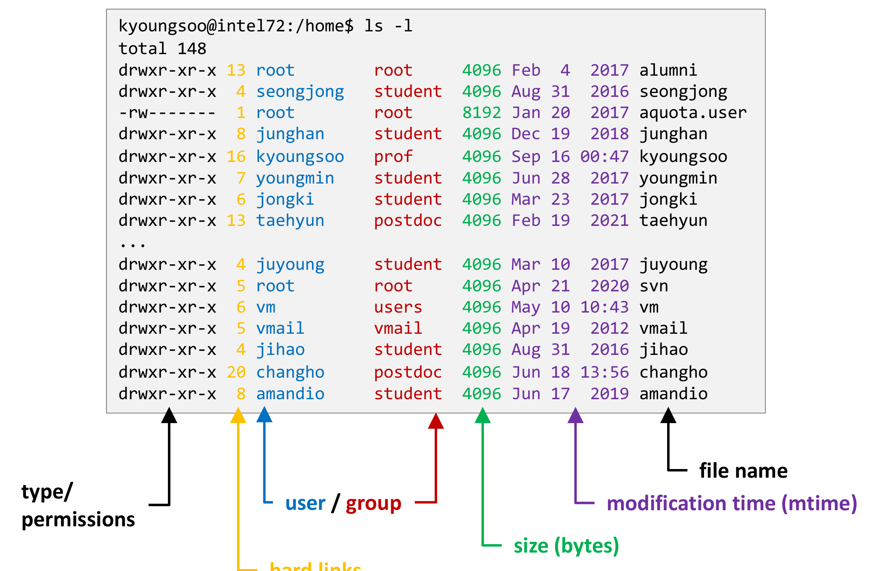
ls -l 출력의 각 열이 무엇을 의미하는지를 색 화살표로 짚은 해부도입니다. 상자 안은 /home에서 실행한 ls -l의 실제 출력이고, 아래쪽에서 올라오는 여섯 개의 화살표가 각각 하나의 열을 가리킵니다 — 검은색은 맨 앞의 drwxr-xr-x 부분으로 타입/권한(type/permissions), 노란색은 그다음 숫자 열로 하드 링크 수(hard links), 파란색과 빨간색은 나란히 놓인 두 이름 열로 각각 소유 사용자(user)와 소유 그룹(group), 초록색은 바이트 단위 크기(size), 보라색은 최종 수정 시각(modification time, mtime), 그리고 오른쪽 끝의 검은색은 파일 이름입니다. 이 그림이 중요한 이유는, 이후 절에서 다룰 거의 모든 개념 — 하드 링크 수, 소유자, 그리고 3장의 권한 비트 — 이 결국 이 한 줄의 어느 칸을 보느냐의 문제로 환원되기 때문입니다. 예컨대 kyoungsoo 사용자의 홈 디렉토리는 그룹이 prof이고 하드 링크 수가 16인데, 이 16이라는 숫자의 의미는 2.6절에서 밝혀집니다.파일은 소프트 링크 또는 하드 링크로 서로를 가리킬 수 있습니다.
- 하드 링크(hard link): 같은 i-node를 공유합니다. 이름만 하나 더 생기는 것이며, 실체는 하나입니다.
- 소프트 링크(soft link, symbolic link): 자기만의 i-node를 가지며, 그 안에 파일 경로 문자열을 담고 있습니다. 실체가 따로 있고, 내용이 “다른 경로의 이름”인 별개의 파일입니다.
- 공통 용도: 서로 다른 파일 이름으로 별칭(aliasing)을 만드는 것.
명령은 다음과 같습니다.
ln <target> <link> # 하드 링크 생성
ln -s <target> <link> # 소프트(심볼릭) 링크 생성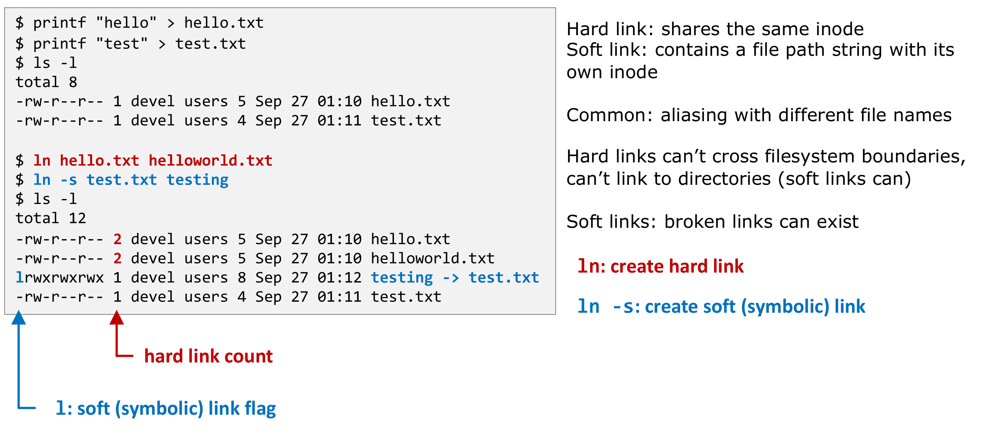
ln과 ln -s를 각각 한 번씩 실행한 뒤 ls -l로 결과를 확인하는 세션입니다. 왼쪽 상자 위쪽에서 hello.txt(5바이트)와 test.txt(4바이트)를 만들면 두 파일의 링크 수가 모두 1입니다. 이어서 빨간색으로 강조된 ln hello.txt helloworld.txt로 하드 링크를, 파란색으로 강조된 ln -s test.txt testing으로 소프트 링크를 만듭니다. 아래쪽 ls -l 결과에서 두 가지가 달라집니다. 첫째, 빨간 화살표가 가리키는 링크 수 열이 hello.txt와 helloworld.txt 모두 2로 바뀌었습니다 — 하드 링크가 같은 i-node를 가리키는 이름을 하나 늘렸기 때문입니다. 둘째, 파란 화살표가 가리키는 맨 앞 글자가 testing 줄에서만 l 이고 이름 옆에 testing -> test.txt라는 화살표 표기가 붙었습니다. 소프트 링크의 크기가 8인 것도 우연이 아닙니다 — test.txt라는 경로 문자열 8글자가 곧 이 파일의 내용이기 때문입니다. 오른쪽 설명은 두 링크의 성질과 제약을 요약합니다.두 링크의 차이는 원본을 수정했을 때와 원본을 지웠을 때 확연히 드러납니다. 강의는 세 개의 실험으로 이를 확인합니다.
실험 1 — 하드 링크는 실체를 공유합니다.
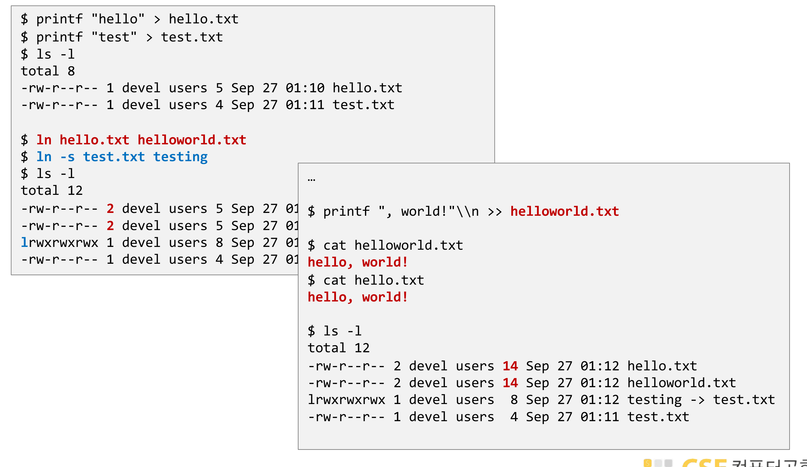
helloworld.txt에 printf ", world!\n" >> helloworld.txt로 내용을 덧붙인 뒤, cat helloworld.txt와 cat hello.txt를 둘 다 실행합니다. 결과는 두 명령 모두 빨간 글씨의 hello, world! 로, 한쪽에 쓴 내용이 다른 쪽에서 그대로 읽힙니다. 마지막 ls -l에서는 hello.txt와 helloworld.txt의 크기가 모두 14(빨간색)로 함께 늘어난 반면 소프트 링크 testing의 크기는 여전히 8에 머물러 있습니다. 두 이름이 같은 i-node, 즉 같은 데이터 블록을 가리키고 있으므로 크기·내용·타임스탬프가 하나로 묶여 움직인다는 사실이 이 그림의 요지입니다.실험 2 — 소프트 링크는 경로를 따라갑니다.
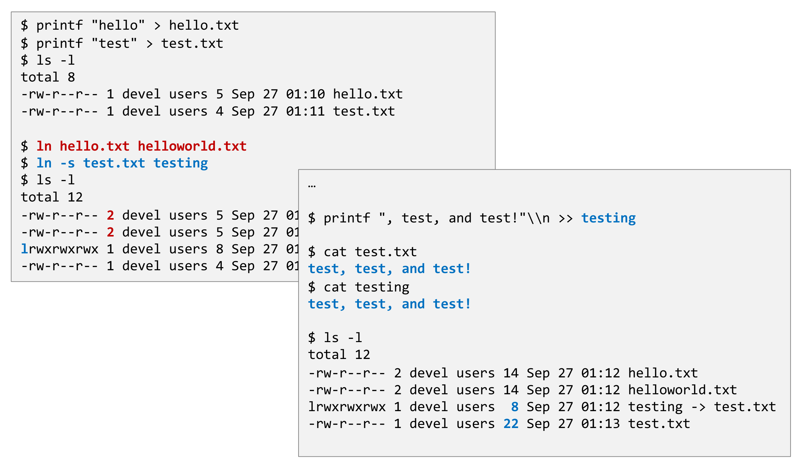
testing(즉 test.txt를 가리키는 심볼릭 링크)에 printf ", test, and test!\n" >> testing을 실행한 뒤 cat test.txt와 cat testing을 모두 확인하면 양쪽 모두 test, test, and test! 가 출력됩니다. 즉 소프트 링크에 쓴 내용은 링크 파일 자신이 아니라 링크가 가리키는 경로의 파일에 기록됩니다. 결정적인 단서는 마지막 ls -l의 크기 열입니다 — test.txt의 크기는 22로 늘어났지만 testing의 크기는 여전히 8입니다. testing이 담고 있는 것은 데이터가 아니라 test.txt라는 경로 문자열뿐이므로, 대상 파일이 아무리 커져도 링크 자신의 크기는 변하지 않습니다.실험 3 — 원본을 지우면 두 링크의 운명이 갈립니다.
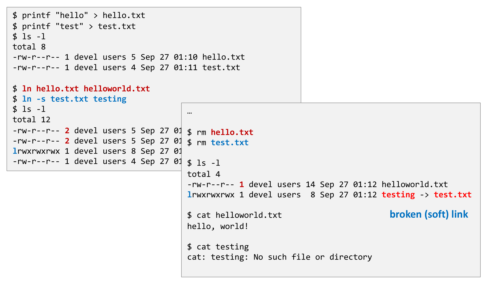
hello.txt, test.txt)를 모두 삭제한 뒤의 상태를 보여 주는 결정적인 실험입니다. 오른쪽 상자에서 빨간색 rm hello.txt와 rm test.txt를 실행하고 ls -l을 하면, 하드 링크였던 helloworld.txt는 링크 수가 2에서 빨간색 1로 줄어든 채 그대로 남아 있고 소프트 링크 testing도 목록에는 남아 testing -> test.txt를 여전히 가리킵니다. 그러나 실제로 읽어 보면 갈립니다 — cat helloworld.txt는 hello, world!를 정상 출력하는 반면, cat testing은 cat: testing: No such file or directory 를 냅니다. 오른쪽 아래의 파란 글씨 “broken (soft) link”가 이 상태의 이름입니다. 하드 링크는 i-node의 참조 계수를 하나 줄일 뿐 데이터를 없애지 않으므로(계수가 0이 되어야 해제됩니다) 마지막 이름이 남아 있는 한 파일은 살아 있고, 소프트 링크는 경로 문자열만 들고 있으므로 그 경로가 사라지면 아무것도 가리키지 않는 껍데기가 됩니다.- 하드 링크는 파일시스템 경계를 넘을 수 없습니다(can’t cross filesystem boundaries). i-number는 하나의 파일시스템 안에서만 유효한 번호이므로, 다른 파일시스템의 i-node를 가리킬 방법이 없습니다.
- 하드 링크는 디렉토리를 가리킬 수 없습니다(can’t link to directories). 반면 소프트 링크는 가능합니다. 디렉토리에 하드 링크를 허용하면 트리에 순환(cycle)이 생겨 경로 탐색이 끝나지 않을 수 있기 때문입니다.
- 소프트 링크에는 깨진 링크(broken link)가 존재할 수 있습니다. 대상이 사라져도 링크 파일 자체는 남아 있으므로,
ls에는 멀쩡히 보이는데 열면 실패하는 상황이 생깁니다.
2.4 파일 타입 (File types)
1.3절에서 개념적으로 나눈 파일 타입은 ls -l 출력의 맨 앞 한 글자로 즉시 확인할 수 있습니다.
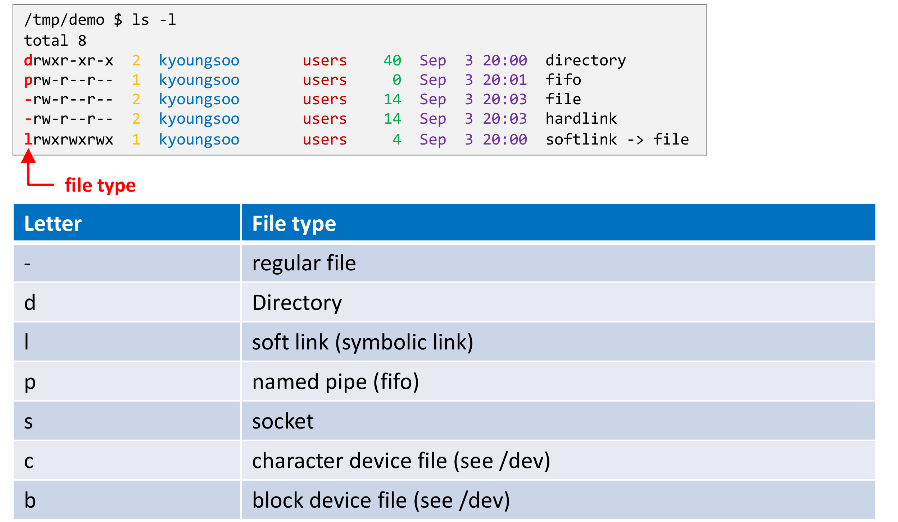
ls -l을 실행한 결과와, 첫 글자가 뜻하는 바를 정리한 표를 함께 보여 줍니다. 위쪽 상자에서 빨간 화살표와 “file type”이라는 빨간 글씨가 각 줄의 맨 앞 한 글자를 가리키고 있으며, 실제로 directory 줄은 d, fifo 줄은 p, file과 hardlink 줄은 -, softlink 줄은 l로 시작합니다. file과 hardlink가 둘 다 링크 수 2에 크기 14로 완전히 동일한 반면 softlink는 링크 수 1에 크기 4(file이라는 경로 문자열 네 글자)라는 점에서 앞 절의 결론이 한 화면에 다시 확인됩니다. 아래 표는 일곱 개의 타입 글자를 정리한 것으로, -는 일반 파일, d는 디렉토리, l은 소프트 링크, p는 named pipe(fifo), s는 소켓, c는 문자 장치 파일, b는 블록 장치 파일이며 마지막 두 개는 /dev 아래에서 볼 수 있습니다.| 글자 | 파일 타입 |
|---|---|
- |
일반 파일(regular file) |
d |
디렉토리(directory) |
l |
소프트 링크(soft link, symbolic link) |
p |
named pipe (fifo) |
s |
소켓(socket) |
c |
문자 장치 파일(character device file, /dev 참조) |
b |
블록 장치 파일(block device file, /dev 참조) |
2.6 디렉토리의 하드 링크 개수 (# of Hard Links of a Directory)
앞의 두 절이 준비 운동이었다면, 이 절은 그것을 써서 작은 퍼즐 하나를 풉니다.
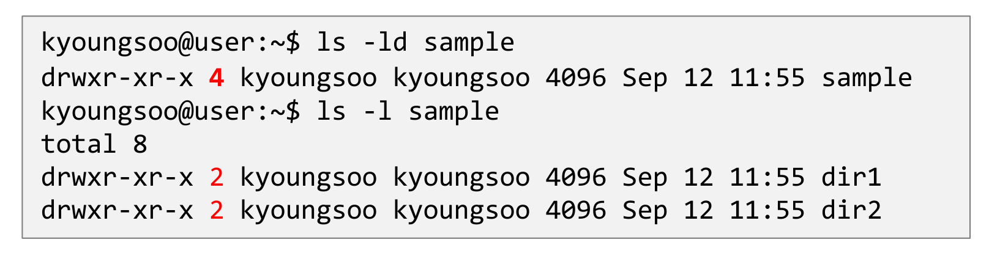
dir1, dir2만을 담고 있는 sample 디렉토리의 링크 수를 확인하는 화면입니다. ls -ld sample은 디렉토리 자체의 정보를 출력하는데, 그 링크 수가 빨간색으로 강조된 4 입니다. 반면 바로 아래 ls -l sample로 내부를 들여다보면 dir1과 dir2의 링크 수는 각각 빨간색 2 입니다. sample 안에 일반 파일은 하나도 없고 디렉토리 두 개뿐인데 왜 4가 나오는가 — 이것이 이 슬라이드가 던지는 질문이며, 답은 .과 ..가 실재하는 하드 링크라는 사실에 있습니다.왜 sample은 4이고 dir1, dir2는 2일까요? 다음 사실들을 조합하면 답이 나옵니다.
.은 현재 디렉토리를 가리키는 하드 링크입니다...은 부모 디렉토리를 가리키는 하드 링크입니다.- 따라서 모든 디렉토리는 자기 자신을 가리키는
.을 하나씩 갖습니다. - 그리고 어떤 디렉토리가 \(N\)개의 하위 디렉토리를 가지면, 각 하위 디렉토리의
..이 전부 그 부모를 가리킵니다.
sample을 가리키는 이름을 모두 세어 보면 됩니다.
\[ \underbrace{1}_{\text{부모 디렉토리 안의 이름 } \texttt{sample}} + \underbrace{1}_{\texttt{sample/.}} + \underbrace{2}_{\texttt{dir1/..},\ \texttt{dir2/..}} = 4 \]
일반화하면 하위 디렉토리가 \(N\)개인 디렉토리의 링크 수는 \(N + 2\) 입니다. dir1과 dir2는 하위 디렉토리가 없으므로 \(0 + 2 = 2\)가 되고, 2.3절의 ls -l /home 출력에서 kyoungsoo의 링크 수가 16이었던 것도 그 홈 디렉토리에 하위 디렉토리가 14개 있다는 뜻으로 읽힙니다.
이 계산이 성립한다는 사실 자체가 디렉토리 역시 그냥 파일이고, .과 ..도 그냥 하드 링크라는 앞 절의 주장을 숫자로 증명해 줍니다.
2.7 파일시스템 계층 표준 (Filesystem Hierarchy Standard, FHS)
무엇이 어디에 있어야 하는가(What goes where?) — 루트를 그냥 나열해 보면 온통 뒤죽박죽처럼 보입니다(Is it all a big mess?).
$ ls -l /
total 76
drwxr-xr-x 2 root root 4096 Sep 3 02:11 bin
drwxr-xr-x 3 root root 4096 Aug 1 20:37 boot
drwxr-xr-x 20 root root 4020 Sep 1 23:17 dev
drwxr-xr-x 88 root root 4096 Sep 3 11:59 etc
drwxr-xr-x 5 root root 4096 Mar 24 2022 home
drwxr-xr-x 13 root root 4096 Jul 5 21:40 lib
drwxr-xr-x 7 root root 4096 Sep 3 02:11 lib64
drwx------ 2 root root 16384 Mar 23 2022 lost+found
drwxr-xr-x 2 root root 4096 Mar 21 2022 media
drwxr-xr-x 4 root root 4096 Sep 16 2022 mnt
drwxr-xr-x 16 root root 4096 Jul 16 19:05 opt
dr-xr-xr-x 447 root root 0 Aug 19 21:52 proc
drwx------ 7 root root 4096 Sep 3 11:59 root
drwxr-xr-x 19 root root 740 Sep 1 23:16 run
drwxr-xr-x 2 root root 12288 Sep 3 02:11 sbin
dr-xr-xr-x 12 root root 0 Aug 19 21:52 sys
drwxrwxrwt 17 root root 1100 Sep 3 18:51 tmp
drwxr-xr-x 12 root root 4096 Sep 20 2022 usr
drwxr-xr-x 10 root root 4096 Sep 3 01:37 var뒤죽박죽이 아닙니다. 이 배치에는 이름이 있습니다.
- 파일시스템 계층 표준(The Filesystem Hierarchy Standard, FHS)은 Unix 시스템에서 디렉토리와 파일의 배치에 대한 관례(conventions for the layout)입니다.
- Linux Foundation이 관리합니다: https://refspecs.linuxfoundation.org/fhs.shtml
루트 아래의 주요 디렉토리
| 디렉토리 | 설명 |
|---|---|
/ |
루트(root) |
/bin |
부팅 과정에 반드시 필요한 필수 바이너리 |
/boot |
부트 로더, 커널 |
/dev |
장치 파일(디스크, 파티션, 메모리, 오디오, 비디오 등) |
/etc |
호스트 고유의 시스템 전역 설정 파일 |
/home |
사용자 홈 디렉토리 |
/lib[64] |
시스템 라이브러리 (/bin, /sbin의 바이너리가 요구하는 것) |
/media, /mnt |
이동식 미디어의 마운트 포인트 |
/opt |
추가 응용 소프트웨어 패키지 |
/proc |
프로세스와 커널 정보 (가상 파일시스템) |
/root |
root 사용자(관리자)의 홈 디렉토리 |
/run |
실행 시간 가변 데이터 |
/sbin |
필수 시스템 바이너리 |
/sys |
장치 드라이버 및 커널 정보와 설정 |
/tmp, /var/tmp |
임시 파일 (재부팅 시 보존되지 않는 경우가 많음) |
/usr |
읽기 전용 사용자 데이터를 위한 2차 계층 |
/var |
가변 파일 |
/usr 하위 계층
| 디렉토리 | 설명 |
|---|---|
/usr |
읽기 전용 사용자 데이터를 위한 2차 계층 |
/usr/bin, /usr/sbin |
필수적이지 않은 바이너리 |
/usr/include |
표준 인클루드 파일 (C 헤더) |
/usr/lib[64] |
/usr/bin, /usr/sbin의 바이너리가 요구하는 라이브러리 |
/usr/libexec |
스크립트를 통해 실행되는 바이너리 (직접 실행하지 않음) |
/usr/local |
이 머신에만 해당하는 로컬 데이터를 위한 3차 계층 |
/usr/share |
응용 프로그램 공유 데이터 |
/usr/src |
소스 코드 (커널 소스) |
/var 하위 계층
| 디렉토리 | 설명 |
|---|---|
/var |
가변 파일(variable files) |
/var/cache |
응용 프로그램 캐시 데이터 |
/var/db |
Gentoo portage (설정 및 소스 파일) |
/var/lib |
응용 프로그램이 수정하는 영속 상태 데이터 |
/var/lock |
현재 사용 중인 자원을 추적하기 위한 락 파일 |
/var/log |
시스템 로그 파일 |
/var/mail |
메일박스 파일 (서버에만 해당) |
/var/run |
실행 시간 가변 데이터 (FHS 3.0에서 /run으로 매핑) |
/var/spool |
처리 대기 중인 작업을 위한 스풀 |
/var/tmp |
임시 파일 (재부팅 시 보존되지 않는 경우가 많음) |
사용자 홈 디렉토리 /home/<USER>/
| 디렉토리 | 설명 |
|---|---|
/home/<USER>/ |
사용자 고유 파일 |
.cache |
사용자 캐시 데이터 |
.config |
사용자 고유 설정 |
.local |
사용자 로컬 데이터 (bin, lib, share) |
.mozilla |
응용 프로그램별 설정 — 예를 들어 Mozilla용 |
.ssh |
SSH에 대해서도 마찬가지 |
.vim |
vim에 대해서도 마찬가지 |
| 그 외 사용자가 만든 디렉토리와 파일 |
- 참고:
~는/home/<USER>의 약어입니다. 예를 들어ls ~/.config처럼 씁니다.
2.5절에서 본 “숨김 파일 = 이름이 .으로 시작하는 파일”이라는 규약이 여기서 제도로 굳어져 있는 것이 보입니다. 홈 디렉토리의 설정 디렉토리들이 모두 .으로 시작하는 이유는, 사용자가 만든 파일과 프로그램이 만든 설정을 ls 한 번으로 분리하기 위해서입니다.
3. 파일시스템과 보안 (Filesystems and Security)
1장의 결론이 “모든 것이 파일”이었으므로, 필연적으로 모든 접근 제어도 파일 권한으로 표현되어야 합니다. 이 장은 그 권한 모델과, 거기서 파생되는 위험을 다룹니다.
3.1 표준 *nix 접근 제어 목록 (Standard *nix Access Control Lists)
- 세 가지 접근 수준(three levels of access): 소유자(owner), 그룹(group), 기타(other)
- 세 가지 권한(three kinds of permissions): 읽기 read (
r), 쓰기 write (w), 실행 execute (x)
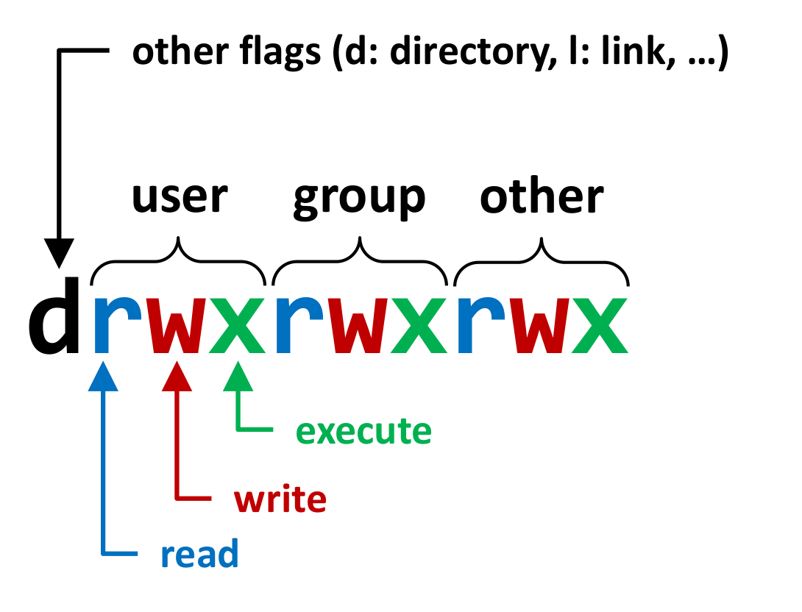
ls -l 맨 앞 열 열 글자의 구조를 분해한 그림입니다. 맨 왼쪽의 검은색 d 는 권한이 아니라 타입 플래그로, 위쪽 화살표가 가리키는 설명대로 d는 디렉토리, l은 링크 등을 뜻합니다. 그 오른쪽의 아홉 글자는 세 글자씩 세 묶음으로 나뉘어 중괄호로 묶여 있으며, 각각 user(소유자) · group(그룹) · other(기타) 에 대한 권한입니다. 묶음 안의 세 자리는 색으로 구분되어 파란 r은 read, 빨간 w는 write, 초록 x는 execute를 나타내고, 아래쪽에서 올라오는 같은 색의 화살표가 각 글자와 이름을 이어 줍니다. 즉 열 글자는 1(타입) + 3(소유자) + 3(그룹) + 3(기타) 로 읽어야 하며, 각 자리는 해당 권한이 있으면 그 글자가, 없으면 -가 나타납니다.실제 출력에서는 이렇게 나타납니다.
devel@csapvm $ ls -l
total 60
drwxr-xr-x 2 devel devel 4096 Sep 26 19:44 doc
-rwxr-xr-- 1 devel devel 18440 Sep 27 01:50 lsec
-rw-r--r-- 1 devel devel 9842 Sep 27 00:52 lsec.c
-rw-r--r-- 1 devel devel 5493 Sep 27 00:37 lsec.h
-rw-rw-rw- 1 devel devel 1009 Sep 26 19:44 Makefile
-r--r----- 1 devel devel 22738 Sep 26 19:44 README.md
drwxr-xr-x 2 devel devel 4096 Sep 26 19:44 reference
drwx---r-x 2 devel devel 4096 Sep 26 19:44 toolsx는 “실행”이 아닙니다
eXecute 권한의 의미는 대상이 파일이냐 디렉토리냐에 따라 완전히 다릅니다.
- 파일: 프로그램을 실행(run)할 수 있습니다.
- 디렉토리:
x는 그 디렉토리 안으로 들어가는 것(entering the dir)을 허용합니다. 목록을 읽으려면(listing content of dir) 여기에r이 추가로 필요합니다.
그래서 --x만 있는 디렉토리는 “이름을 이미 알고 있는 파일에는 접근할 수 있지만 무엇이 들어 있는지는 볼 수 없는” 상태가 되고, r--만 있는 디렉토리는 반대로 “이름 목록은 보이지만 그 안의 어떤 것에도 닿을 수 없는” 상태가 됩니다. 위 출력의 drwx---r-x tools는 이 구분이 실제로 쓰이는 예입니다 — 그룹은 아무것도 못 하고, 기타 사용자는 들어갈 수는 있지만 목록은 볼 수 없습니다.
권한은 chmod 명령으로 바꿉니다.
devel@csapvm ~/temp $ echo "hello" > test.txt
devel@csapvm ~/temp $ ls -l
-rw-r--r-- 1 devel devel 6 Sep 16 19:37 test.txt
devel@csapvm ~/temp $ chmod g+w test.txt
devel@csapvm ~/temp $ ls -l
-rw-rw-r-- 1 devel devel 6 Sep 16 19:37 test.txt
devel@csapvm ~/temp $ echo "ls -l" > script.sh
devel@csapvm ~/temp $ ./script.sh
-bash: ./script.sh: Permission denied
devel@csapvm ~/temp $ ls -l
-rw-r--r-- 1 devel devel 6 Sep 16 19:38 script.sh
devel@csapvm ~/temp $ chmod 750 script.sh
devel@csapvm ~/temp $ ls -l
-rwxr-x--- 1 devel devel 6 Sep 16 19:37 test.txtchmod g+w test.txt— 기호 표기입니다. 그룹(g)에 쓰기(w)를 더합니다(+). 결과가-rw-r--r--에서-rw-rw-r--로 바뀝니다../script.sh가Permission denied로 실패하는 이유는 파일 내용이 잘못되어서가 아니라x비트가 없어서입니다. 이것이 “실행 가능 여부는 파일 이름이나 내용이 아니라 권한 비트가 정한다”는 점을 보여 주는 장면입니다.chmod 750 script.sh— 8진수 표기입니다. 세 자리가 각각 소유자·그룹·기타에 대응하고, 각 자리는 \(r=4\), \(w=2\), \(x=1\)의 합입니다. 따라서 \(7 = 4+2+1 = \texttt{rwx}\), \(5 = 4+1 = \texttt{r-x}\), \(0 = \texttt{---}\)가 되어-rwxr-x---가 나옵니다. (슬라이드의 마지막 줄은chmod를script.sh에 걸고도 이름이test.txt로 출력되어 있는데, 우리가 볼 것은 권한 문자열-rwxr-x---입니다.)- 자세한 내용은
man 1 chmod를 참고합니다.
3.3 예시: SUID/SGID 살펴보기 (Example: Explore SUID/SGID)
이 비트들을 실제로 켜 보고 무슨 일이 일어나는지 확인합니다.
# 사용자/그룹 소유자 설정
sudo chown <usr>[:<grp>] <file>
# suid 비트
sudo chmod 4755 <exe>
# sgid 비트
sudo chmod 2755 <exe>
# suid + sgid 비트
sudo chmod 6755 <exe>8진수 네 자리에서 맨 앞 자리가 특수 비트를 담당하고 (\(\text{SUID}=4\), \(\text{SGID}=2\), \(\text{sticky}=1\)), 뒤의 세 자리가 우리가 아는 rwxr-xr-x입니다. 따라서 \(6 = 4 + 2\)는 SUID와 SGID를 함께 켜라는 뜻입니다.
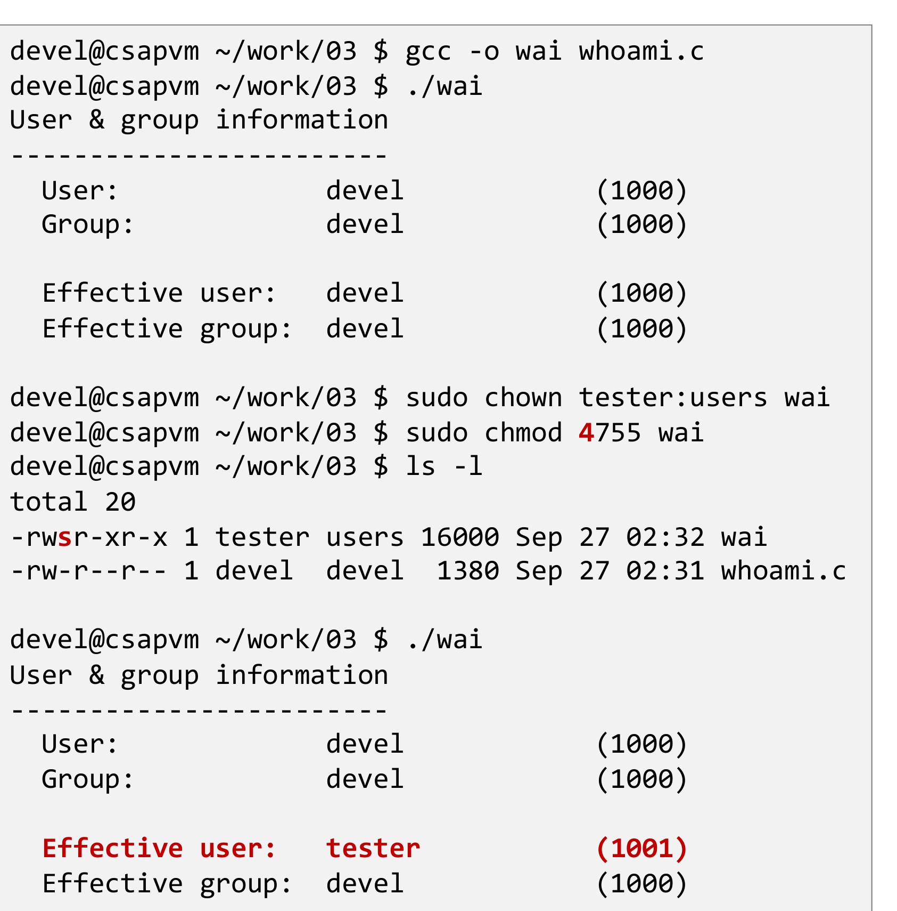
gcc -o wai whoami.c로 빌드한 뒤 ./wai를 실행하면 User·Group·Effective user·Effective group이 모두 devel (1000) 로 같습니다. 이어서 sudo chown tester:users wai로 소유자를 바꾸고 빨간색 4가 강조된 sudo chmod 4755 wai 로 SUID 비트를 켭니다. 그 결과 ls -l의 권한 문자열이 -rwsr-xr-x(소유자 실행 자리의 빨간 s) 로 바뀌고 소유자는 tester users가 됩니다. 마지막으로 같은 ./wai를 같은 devel 사용자로 다시 실행하면, User와 Group은 여전히 devel (1000)인데 빨간 글씨로 강조된 Effective user: tester (1001) 만 달라져 있습니다. 실제 사용자는 그대로인 채 유효 사용자만 파일 소유자로 바뀐다는 것이 SUID의 정확한 의미이며, 이 한 화면이 그것을 그대로 보여 줍니다.여기서 등장한 두 종류의 신원을 구별해야 합니다.
- 유효 사용자/그룹(effective user/group): 프로세스가 그 권한으로 실행되고 있는 사용자/그룹입니다. 커널이 접근 제어를 판단할 때 보는 값입니다.
- (실제) 사용자/그룹(real user/group): 프로세스를 시작한 원래 사용자/그룹입니다 (suid/sgid가 적용되기 전의 값).
실험에 쓰인 whoami.c는 이 네 값을 그대로 출력하는 프로그램입니다.
#include <grp.h>
#include <pwd.h>
…
int main(int argc, char *argv[]) {
// get user id, effective user id, group id, effective group id
uid_t uid = getuid();
uid_t euid = geteuid();
gid_t gid = getgid();
gid_t egid = getegid();
// get user and group names
char *user, *euser, *group, *egroup;
struct passwd *pwd;
struct group *grp;
if ((pwd = getpwuid(uid)) != NULL) user = strdup(pwd->pw_name);
if ((pwd = getpwuid(euid)) != NULL) euser = strdup(pwd->pw_name);
if ((grp = getgrgid(gid)) != NULL) group = strdup(grp->gr_name);
if ((grp = getgrgid(egid)) != NULL) egroup = strdup(grp->gr_name);
// print results
printf("User & group information\n"
"------------------------\n"
" User: %-16s (%4d)\n"
" Group: %-16s (%4d)\n"
"\n"
" Effective user: %-16s (%4d)\n"
" Effective group: %-16s (%4d)\n",
user ? user : "n/a", uid,
group ? group : "n/a", gid,
euser ? euser : "n/a", euid,
egroup ? egroup : "n/a", egid);
// free allocated memory
free(user); free(egroup); free(group); free(euser);
return EXIT_SUCCESS;
}getuid()/geteuid()와 getgid()/getegid()가 쌍으로 존재한다는 사실 자체가, 커널이 두 신원을 따로 관리하고 있음을 말해 줍니다.
3.4 예시: SUID/SGID 비트 검사하기 (Example: Checking for SUID/SGID Bit)
그렇다면 “위험한 설정”을 프로그램으로 찾아내려면 어떻게 해야 할까요? 강의는 한 디렉토리를 훑으며 위험한 조합을 찾는 코드를 제시합니다.
DIR *d = opendir(name);
int dd = dirfd(d);
struct dirent *entry;
while ((entry = getNext(d)) != NULL) {
struct stat sb;
struct statfs dsb;
fstatat(dd, entry->d_name, &sb, // 디렉토리 엔트리의 메타데이터를 얻는다
AT_SYMLINK_NOFOLLOW);
if (S_ISREG(sb.st_mode) && // 일반 파일이고,
(((sb.st_uid == 0) && (sb.st_mode & S_ISUID)) // 소유자가 root면서 SUID가 켜져 있거나
|| ((sb.st_gid == 0) && (sb.st_mode & S_ISGID)))) // 그룹이 root면서 SGID가 켜져 있으면
{
fstatfs(dd, &dsb); // 파일시스템의 메타데이터를 얻는다
if (!(dsb.f_flags & (ST_NOEXEC|ST_NOSUID))) { // NOEXEC도 NOSUID도 걸려 있지 않다면
// dangerous configuration // 잠재적으로 위험한 설정이다
}
}
…
}논리 구조가 앞 절의 내용을 그대로 옮겨 놓은 것임을 알 수 있습니다.
AT_SYMLINK_NOFOLLOW— 심볼릭 링크를 따라가지 않고 링크 자신의 메타데이터를 봅니다. 링크를 따라가면 검사 대상이 아닌 곳의 파일을 검사하게 되고, 2.3절에서 본 대로 깨진 링크에서는 실패합니다.S_ISREG— 일반 파일에만 의미가 있는 검사입니다. 디렉토리의 SGID는 다른 의미를 가지므로 제외합니다.st_uid == 0또는st_gid == 0— uid/gid 0은root입니다. root 소유 + SUID/SGID가 곧 권한 상승 통로이기 때문에 이 조합만 골라냅니다.fstatfs()로 파일시스템 플래그 확인 — 파일 쪽 비트가 위험하더라도, 파일시스템이nosuid나noexec로 마운트되어 있다면 실제로는 무력화됩니다. 파일 단위 검사만으로는 판정이 완결되지 않는다는 것이 이 코드의 마지막 논점입니다.
- 가독성을 위해 오류 검사는 생략되어 있습니다(for readability, no error checking performed).
3.5 확장 파일 속성 (Extended File Attributes)
- POSIX ACL은 사용자·그룹·그 외 모두에 대한 접근 권한으로 제한됩니다. 즉 “이 사용자 한 명에게만 읽기를 열어 주고 싶다”는 요구를 표현할 방법이 없습니다.
- 확장 파일 속성(extended file attributes, xattrs)은 파일에 대한 메타데이터(ACL 포함)를 저장하는 확장 가능하고 더 유연한 방법을 제공합니다.
- 특정 사용자에 대한 ACL을 설정/조회할 수 있습니다 (
setfacl/getfacl). - xattr는
key=value쌍이며, 키는namespace.attribute형식이고 값은 문자열입니다.
- 특정 사용자에 대한 ACL을 설정/조회할 수 있습니다 (
현재 정의된 네임스페이스는 security, system, trusted, user 네 가지입니다.
| 네임스페이스 | 용도 |
|---|---|
security |
SELinux 같은 커널 모듈이 고급 ACL을 구현하는 데 사용 |
system |
커널이 시스템 객체를 저장하는 데 사용 |
trusted |
CAP_SYS_ADMIN 능력을 가진 프로세스에만 보임 |
user |
파일에 대한 임의의 부가 정보 저장 — MIME 타입, md5sum, 문자 인코딩 등 |
네임스페이스를 나눈 이유는 명확합니다. 같은 “키=값” 저장소를 커널·보안 모듈·관리자·일반 사용자가 공유하면서도, 누가 무엇을 읽고 쓸 수 있는지를 키 이름의 접두사만으로 구분하기 위해서입니다.
3.6 확장 파일 ACL (Extended File ACL)
먼저 파일시스템이 xattr를 지원하는지 확인해야 합니다.
devel@csapvm $ mount | grep "/ "
/dev/sda4 on / type ext4 (rw,noatime)
devel@csapvm $ cat /proc/fs/ext4/sda4/options | grep xattr
user_xattrmount로 루트가 어떤 장치·어떤 파일시스템인지 알아낸 다음, /proc 아래의 해당 파일시스템 옵션에서 user_xattr가 켜져 있는지 확인하는 순서입니다. 1.2절에서 “커널 자료구조가 /proc이라는 파일로 노출된다”고 했던 것이 여기서 실제로 쓰이고 있습니다.
확장 ACL은 setfacl / getfacl로 설정하고 조회합니다.
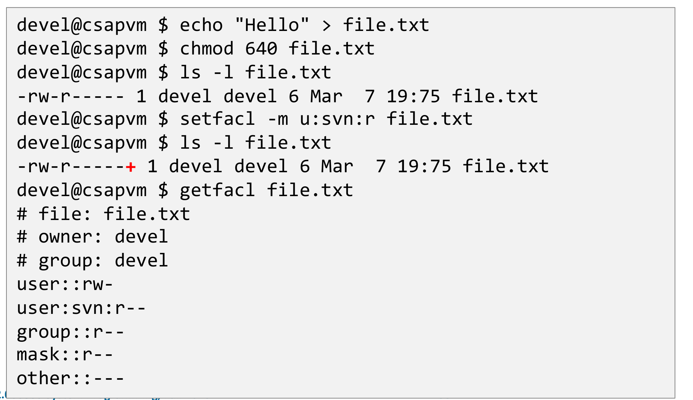
chmod 640 file.txt로 소유자에게 읽기·쓰기, 그룹에게 읽기, 기타에게 아무 권한도 주지 않은 상태(-rw-r-----)를 만듭니다. 이어서 setfacl -m u:svn:r file.txt로 svn이라는 특정 사용자 한 명에게만 읽기 권한을 추가하면, ls -l의 권한 문자열 끝에 빨간색 + 기호가 붙어 -rw-r-----+가 됩니다. 이 +가 “이 파일에는 일반 아홉 비트 외에 추가 ACL이 달려 있다”는 표시입니다. 마지막 getfacl file.txt의 출력이 그 내용을 펼쳐 보여 주는데, user::rw-(소유자), user:svn:r--(개별 사용자 항목), group::r--, mask::r--, other::---가 차례로 나열됩니다. 아홉 비트만으로는 불가능했던 “특정 한 사람에게만” 이라는 정책이 별도의 항목으로 표현되었다는 점이 이 화면의 요지입니다.3.7 확장 파일시스템 속성: user 네임스페이스 (Extended File System Attributes: User)
setfattr / getfattr로는 임의의 속성을 직접 붙이고 읽을 수 있습니다.
devel@csapvm $ md5sum file.txt
09f7e02f1290be211da707a266f153b3 file.txt
devel@csapvm $ setfattr -n user.checksum.md5 -v 09f7e02f1290be211da707a266f153b3 file.txt
devel@csapvm $ ls -l
total 8
-rw-r--r--+ 1 devel devel 6 Mar 7 19:75 file.txt
devel@csapvm $ getfattr file.txt
# file: file.txt
user.checksum.md5
devel@csapvm $ getfattr -n user.checksum.md5 file.txt
# file: file.txt
user.checksum.md5="09f7e02f1290be211da707a266f153b3"
devel@csapvm $ setfattr -x user.checksum.md5 file.txt
devel@csapvm $ getfattr file.txt
devel@csapvm $ getfattr -n user.checksum.md5 file.txt
file.txt: user.checksum.md5: No such attribute흐름을 보면 xattr가 파일 내용과 나란히 붙어 다니는 별도의 작은 키-값 저장소임이 분명해집니다.
setfattr -n <key> -v <value>— 속성을 설정합니다. 여기서는 파일의 md5 체크섬을user.checksum.md5라는 키로 파일 자신에게 붙였습니다.- 속성이 붙으면
ls -l의 권한 문자열 끝에+가 나타납니다. getfattr <file>은 키 목록만,getfattr -n <key> <file>은 값까지 보여 줍니다.setfattr -x <key>— 속성을 제거합니다. 이후 같은 키를 조회하면No such attribute가 반환됩니다.
체크섬을 파일 옆에 별도 파일로 두는 대신 파일 자신에게 매달아 둘 수 있다는 것이 이 기능의 매력입니다. 파일을 옮기거나 이름을 바꿔도 메타데이터가 따라오고, 디렉토리 목록이 체크섬 파일로 어지러워지지 않습니다.
4. 요약 (Summary)
강의가 스스로 정리한 결론은 다음과 같습니다.
Unix의 개념: 모든 것은 파일이다(everything is a file).
파일시스템은 여러 “고급” 기능을 지원한다.
- 공통 루트 아래에 서로 다른 파일시스템의 마운트 포인트를 둘 수 있다
- 서로 다른 권한으로 마운트할 수 있다
- 하드 링크와 소프트 링크
- set user/group id
보안
- 접근 제어 목록(ACL)
- user, group, other(= 그 외 모두)에 대해
- 읽기, 쓰기, 실행 권한
- 많은 “위험한” 설정이 가능하다 — 특히 sticky, suid/sgid 비트
- 확장 파일 속성(xattrs)이 더 세밀한 제어를 제공한다
- 접근 제어 목록(ACL)
정리하며 (Closing Remarks)
이번 강의의 논증 사슬을 단계별로 압축하면 다음과 같습니다.
| 단계 | 내용 | 근거 |
|---|---|---|
| ① 타입의 축소 | 파일을 \(B_0 \dots B_{m-1}\)의 바이트 열로만 정의한다 — 형식은 정의에 없다 | Unix Files |
| ② 축소의 대가로 얻는 것 | 형식이 없으므로 디스크·키보드·소켓·커널 자료구조까지 전부 파일이 된다 | everything is a file |
| ③ 인터페이스의 통일 | 장치의 종류가 “어떤 경로를 여는가”로 환원된다 | Unix I/O — one single file interface |
| ④ 이름과 실체의 분리 | 이름은 디렉토리가, 메타데이터·데이터는 i-node가 갖는다 | i-number → i-node |
| ⑤ 분리가 낳는 두 링크 | 같은 i-node를 가리키면 하드 링크, 경로 문자열을 담으면 소프트 링크 | ln / ln -s 세 실험 |
| ⑥ 분리의 증명 | 하위 디렉토리 \(N\)개인 디렉토리의 링크 수 \(= N + 2\) | .과 ..도 하드 링크 |
| ⑦ 네임스페이스의 통일 | 드라이브 문자 없이 단일 루트에 마운트하고, 배치는 FHS로 표준화한다 | mount / FHS |
| ⑧ 대가의 청구 | 모든 것이 파일이면 모든 접근 제어도 권한 비트로 표현되어야 한다 | user/group/other × r/w/x |
| ⑨ 아홉 비트의 부족 | “임시 디렉토리 공유”, “권한 상승”을 표현하려 sticky·SUID/SGID가 얹힌다 | S_ISVTX / S_ISUID / S_ISGID |
| ⑩ 위험의 이중 방어 | 파일 단위(chmod)와 파일시스템 단위(nosuid, noexec) 두 층으로 막는다 |
fstatfs() + ST_NOEXEC/ST_NOSUID |
| ⑪ 표현력의 마지막 확장 | 여전히 부족한 “특정 한 사람에게만”은 xattr가 메운다 | setfacl / setfattr |
개인적인 감상 몇 가지를 덧붙입니다.
- 가장 인상적인 지점은 이 강의가 “파일의 정의를 빈약하게 만드는 것이 곧 설계”라는 사실을 첫 슬라이드부터 드러낸다는 점입니다. 보통 “파일이란 무엇인가”에 답할 때는 정의를 풍부하게 만들려 하기 마련인데, Unix는 반대로 길이와 바이트 값 외의 모든 것을 정의에서 덜어냅니다. 그 결과 키보드와 디스크와 커널 자료구조가 같은 타입이 되고,
read와write두 개의 시스템 호출이 모든 장치를 상대할 수 있게 됩니다. 추상화의 힘이 더 많이 담는 데서가 아니라 덜 담는 데서 나온다는 것을 이보다 짧게 보여 주기는 어려울 것 같습니다. - 3장이 1장의 대가를 정산하는 구조라는 점도 인상적입니다. 강의는 이를 명시적으로 말하지 않지만, 순서 자체가 논증입니다 — 모든 것을 파일로 만들었으니 모든 접근 제어도 파일 권한이라는 하나의 언어로 말해야만 하고, 그래서 아홉 개 비트가 감당하지 못하는 정책이 나올 때마다 그 언어를 조금씩 늘려야 합니다. sticky bit는 “누구나 쓸 수 있지만 남의 것은 못 지운다”를, SUID는 “실행 중에만 신원을 바꾼다”를, xattr는 “이 사람 한 명에게만”을 표현하기 위해 각각 덧붙여진 문법입니다. 아홉 비트의 단순함이 곧 그 위에 쌓인 특수 비트들의 원인이라는 인과가 선명합니다.
.과..이 진짜 하드 링크라는 사실은 작지만 가장 아름다운 대목입니다.cd ..가 “위로 올라가는 특별한 명령”이 아니라 그저 이름 하나를 따라가는 평범한 경로 탐색이라는 것, 그리고 그 사실이ls -ld가 출력하는 숫자4로 관측 가능하다는 것 — 개념이 구현을 통해 검증되는 이 짧은 왕복이 강의 전체에서 가장 밀도가 높습니다. \(N+2\)라는 공식은 외울 것이 아니라 디렉토리도 파일이라는 명제의 따름정리입니다.- 하드 링크의 두 제약이 임의의 규칙이 아니라는 점도 짚어 둘 만합니다. “파일시스템 경계를 넘을 수 없다”는 것은 i-number가 파일시스템 지역 번호라는 구현에서 곧바로 따라 나오고, “디렉토리를 가리킬 수 없다”는 것은 트리에 순환이 생기면 경로 탐색과 참조 계수 관리가 무너진다는 사실에서 따라 나옵니다. 제약이 정책이 아니라 구조의 그림자라는 것을 확인하는 순간, 소프트 링크가 왜 그 두 가지를 모두 할 수 있는지도 자동으로 설명됩니다 — 소프트 링크는 i-node를 가리키는 것이 아니라 문자열을 담고 있을 뿐이기 때문입니다.
- 실용적 한계도 정직하게 남아 있습니다. 3.4절의 검사 코드가 보여 주듯, “이 설정이 위험한가”라는 질문은 파일의 비트만 봐서는 답이 나오지 않습니다. 같은 SUID 바이너리라도
nosuid로 마운트된 파일시스템 위에서는 무해하고, 마운트 옵션은 다시 그 파일시스템이 어디에 어떻게 붙었는지에 달려 있습니다. 즉 보안 판정이 파일·디렉토리·마운트·커널 설정 네 층에 흩어져 있다는 뜻이며, 이는 “모든 것이 파일”이라는 단일 추상화가 보안 정책까지 단일화해 주지는 못했다는 방증이기도 합니다. POSIX ACL의 한계를 xattr가, xattr의 한계를 다시 SELinux 같은security네임스페이스 사용자가 메우고 있는 지금의 지층 구조가 그 흔적입니다.